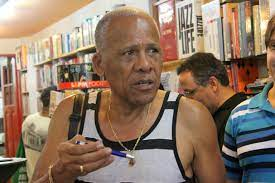

Dadá Maravilha
Dario José (conhecido como Dadá maravilha),é o segundo maior artilheiro da história do
Galo
, atuou entre 1968 e 1979.
Títulos pelo
Galo
:
Campeonato Brasileiro: 1971
Campeonato Mineiro: 1970 e 1978
Voltar